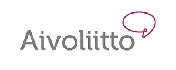

Tapahtuma siirretty!
Tapahtuma siirretään Korona viruksen takia. Uusi päivämäärä ilmoitetaan pikimmiten.
Tervetuloa Bearded Villains Finland ry:n järjestämään hyväntekeväisyystapahtumaan Hietaniemeen lauantaina 23.5.2020.
Run4! – on koko perheen hyvänmielen liikuntatapahtuma, jossa kerätään rahaa vuosittain vaihtuvalle kohteelle. Tänä vuonna juostaan hyvää Aivoliitto ry:lle.
Yksittäisille osallistujille osallistujamaksu on vapaaehtoinen ja suuruinen, mutta kaikki kerätyt varat menevät suoraan lyhentämättömänä Aivoliitolle.
Yksi kierros on n.3km, kierroksien määrän valitset itse.
Aikataulu:
klo. 9-10.45 Ilmoittautuminen ja numeroiden nouto
11.00 lähtö
12.00 perhelähtö
14.00 tapahtuma loppu
